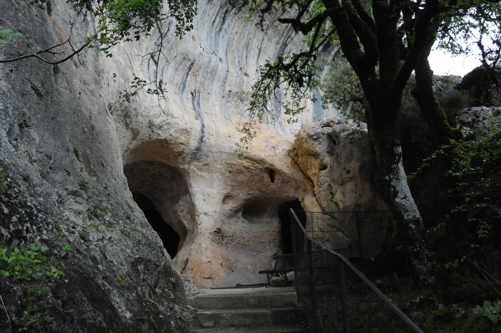
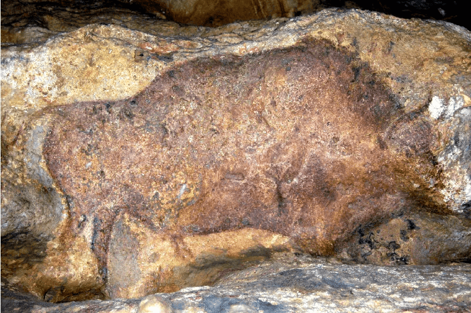
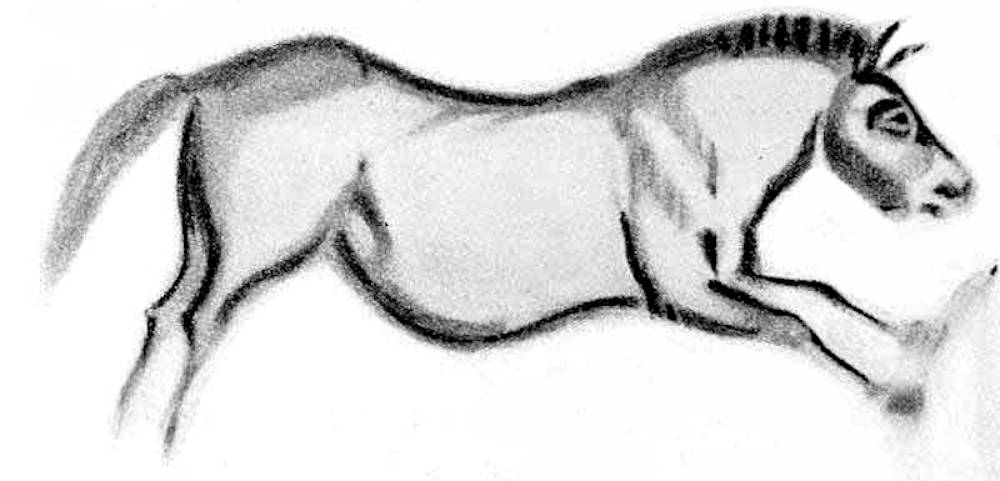
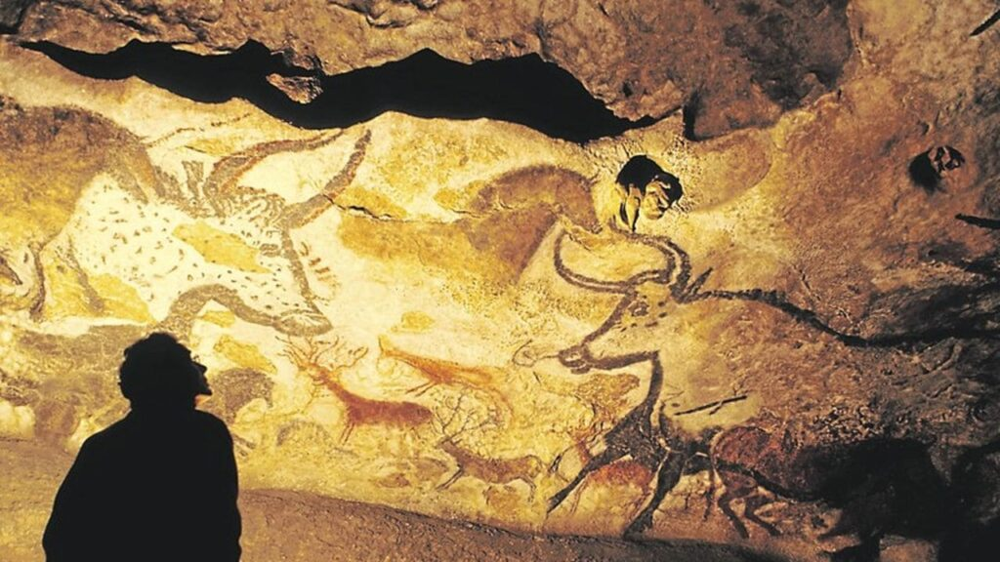
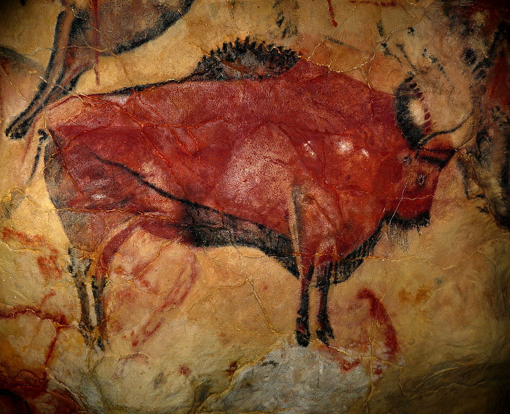
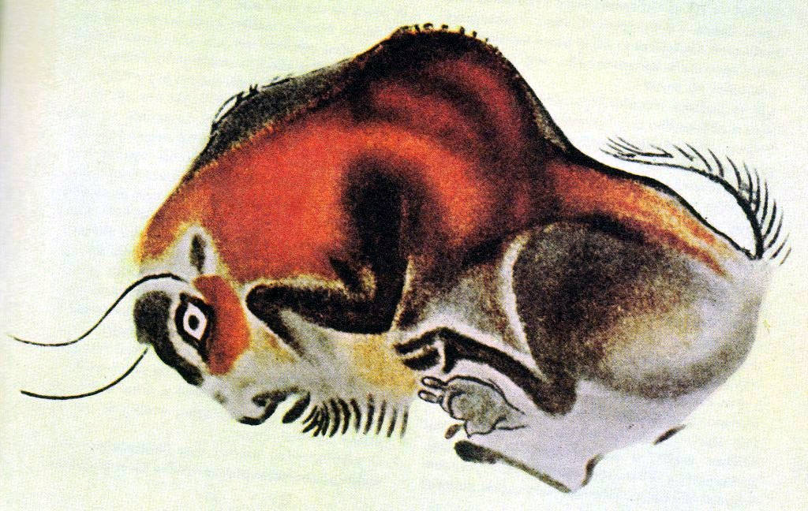
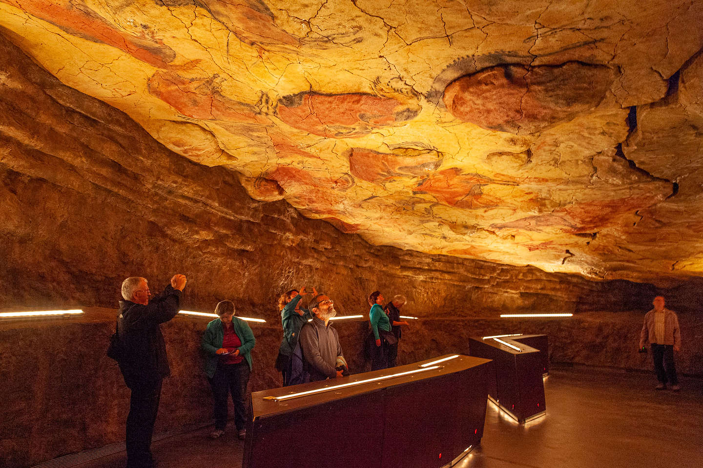
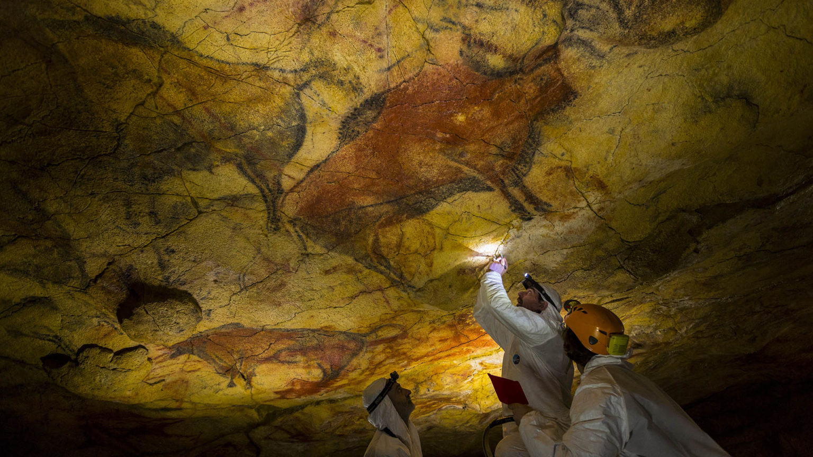

- ආදී මානව ඉතිහාසය පිරික්සා බැලීමේ දී, දක්නට ලැබෙන්නේ මිනිසා එකට වෙලි ජීවත් වූයේ පරිසරය සමඟ බවයි. පරිසරය හා ගැටෙමින් ජීවත් වූ මිනිසා ගල්ගුහා තම නිවස්න කර ගත්තේය.
- ඔවුහූ තම අදහස් ප්රකාශ කිරීමට ගල් ගුහා බිත්ති ප්රයෝජනයට ගත්හ. ඒ සඳහා උපයෝගී කර ගත්තේ ස්වභාවිකව සොයා ගත් වර්ණයය. නිදහස් චින්තනය මෙහෙයවමින් රේඛාමය වශයෙන් චිත්ර කරණයට යොමු වූ මානවයා සත්ව රූප ඇඳීමට මුල්තැනක් දී ඇත.
- යුරෝපයේ ප්රාග් ඓතිහාසික චිත්ර ඇති ස්ථාන අතර ප්රංශයේ මොන්ටිකැක් නගරයේ ලැස්කෝ ගුහාව. ෆොන්ඩ් ගොමි, ගුහාව, ස්පාඤ්ඤයේ ඇල්ටමයිරා ගුහාව. කෝගුල් ගුහාව ප්රධාන තැනක් ගනී.
- ප්රාග් ඓතිහාසික චිත්ර ශිල්පියා, පොළොවේ පාෂාබා, සතුන්ගේ ලේ. තෙල්, ගස්වල කොළ පොතු භාවිතයෙන් වර්ණ තනා ගත්හ. කවි, දුඹුරු, කහ, රතු යන වර්ෂා බහුලව භාවිතයට ගත් බව පෙනේ.
- මොවුන් චිත්ර ඇඳීමේ දී ඇගිලි, අත්ල, ආධාර කර ගෙන ඇඳීම, ගලේ මැටි තවරා ඇදීම. සූරන උපකරණයකින් සූරා ඇඳීම ආදී කුම ශිල්ප භාවිත කර ඇත. කවි වර්ණයෙන් බාහිර රේඛා යොදා ඇත.
ප්රංශයේ ලැස්කෝ ගුහා සිත්තම්
- ප්රංශයේ මොන්ටි හැක් නුවර අසල ප්රාග් ඓතිහාසික ගුහා සිතුවම් සදහා ප්රසිද්ධියක් උසුලන "Laxcaus " හි ලැස්කෝ ගුහා පිහිටා ඇත.
- ආදි ශිලා යුගයට අයත් සිතුවම් මෙහි දක්නට ලැබේ.
- මෙහි ඇති චිත්ර පළමුවරට අනාවරණය කර ගත්තේ 1940 වර්ෂයේ දී ය.
- ලැස්කෝ ගුහාවේ චිත්ර අතර අඩි 17 පමණ දිග බයිසන් රුව විශිෂ්ඨ නිර්මාණයක් ලෙස සැලකිය හැකි ය. ඊට අමතරව අඩි 15 පමණ දිග බයිසන් ගවරූප 05 ක් දක්නට ලැබේ.
- එමෙන් ම කළු, කහ, දුඹුරු ආදී වර්ණ පූර්ණය කර ඇති අශ්ව රූප රාශියක් වෙයි.
- ක්රියාකාරී රයිනෝසිරස්, කුරුළු රූප, මානව රූප රාශියක් මෙහි දැක ගත හැකිය.
- මෙම ගුහාවේ විශේෂ චිත්රයක් ලෙස දඩයම් දර්ශනය (HUNTING SCENE) හඳුනා ගැනෙයි. එය "මළ මිනිසාගේ රචනය" නමින් නම් කර ඇත.
- සිතුවම් අතර තුවාල ලද බයිසන් ගවයකු නිරූපණය වේ. ඒ අසල ආයුධයකි. වැතිර ගත් මිනිස් රුවක් ද කුරුළු රූපයක් ද වේ.
- මේ සෑම රුවක් වටා ම කළු බාහිර රේඛාවක් දැකිය හැකිය.
ෆොන්ඩි ගෝමි ගුහා සිත්තම්
- මෙහි ඇති චිත්ර සටහන් අතර කළු රේඛාවෙන් අදින ලද මැමත් අලි විශේෂය වැදගත් තැනක් ගනී. එම අලි වර්ගයට ම විශේෂිත ඉහළට නැමී ඇති දළ හා ශරීරය පුරා ඇති රෝම ඉතාමත් තාත්වික ලෙස දැක්වීමට සමත් වී ඇත.
- මෙහි ඇති අශ්ව රූපයේ ජංගම ස්වභාවය පෙන්වන චලහය මනාව පෙන්නුම් කරලීමට ශිල්පියා සමත් වී ඇත.
- කළු රේඛාවෙන් අඳින ලද අශ්ව රූපය ඉතා සුවිශේෂී නිර්මාණයකි.




ස්පාඤ්ඤයේ ඇල්ටමයිරා ගුහා සිත්තම්
- ඇල්ටමයිරා සිතුවම් අතර ශිලා යුගයේ මිනිසා දඩයම් කළ සතුන්ගේ රූප සටහන් දැකිය හැකිය.
- මෙම සිතුවම් සඳහා දුඹුරු, කළු, රතු ආදී වර්ණ යොදා ගෙන ඇත.
- බයිසන් ගව රූපය, වල් ඌරන්, පිහි මුවන් ආදී සතුන් මෙම චිත්ර අතර බහුලව දක්නට ලැබේ.
- විවේක ගන්නා බයිසන් නැමැති නිර්මාණය නිර්මාණ අතර විශිෂ්ඨය.
- ඉහත සතුන්ට අමතරව කැන්ගරු, මැමත් යන රූප ද සිතුවම් අතර වේ.



